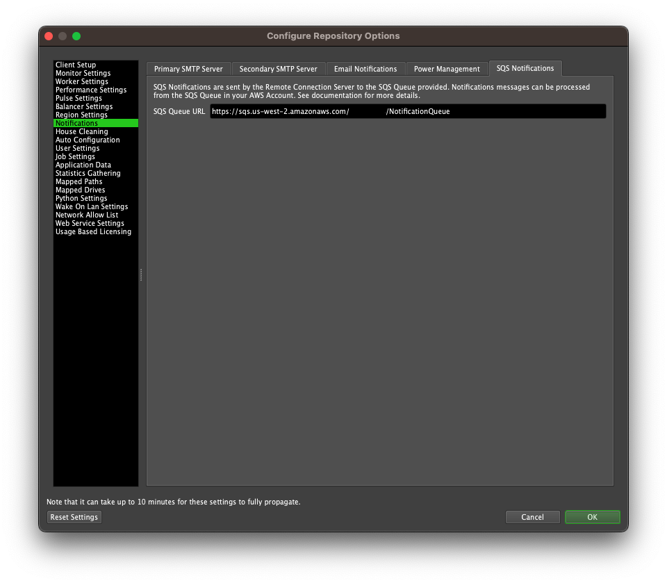
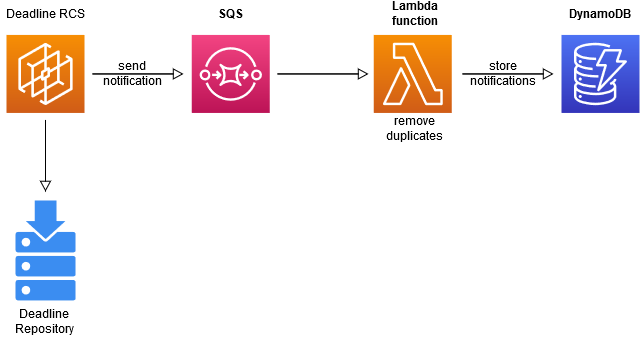
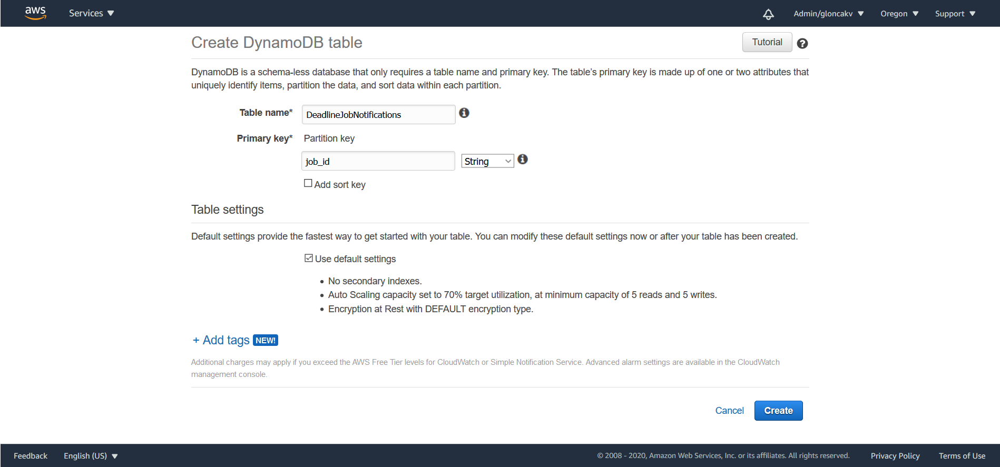
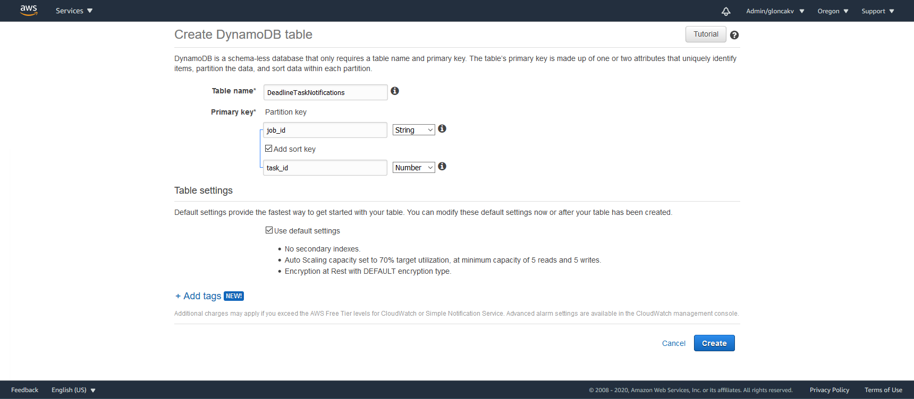
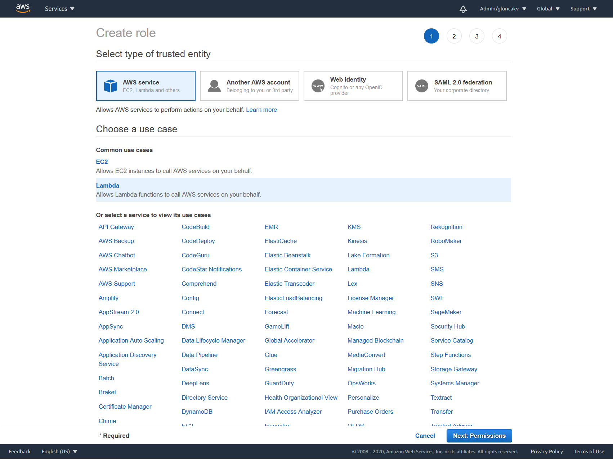

SQS Notifications¶
Overview¶
Warning
This is a beta feature.
Deadline provides SQS notifications to help you monitor your Deadline events. This feature requires you to use Remote Connection Server to connect to your Deadline Repository.
The notification is a message in JSON format containing information about a job or a task, such as id, frame range, worker that’s processing it etc. These messages are collected by AWS SQS where they await being processed. The Remote Connection Server sends notifications every minute about the following events:
A job is suspended.
A job is completed.
A job fails.
An active job is deleted.
A rendering task is suspended.
A task is completed.
A task fails.
A task is automatically requeued.
If a worker crashes, the notification about the job or task will be sent at the time the problem is detected, usually during the automatic repository repair, not at the moment the worker crashes.
Deadline Set-up¶
To receive SQS notifications, you need to connect to a Deadline repository through Remote Connection Server. If you haven’t installed Remote Connection Server with Deadline, you’ll need to re-install Deadline Client.
Set Deadline to connect to the repository through Remote Connection Server.
Log in to the AWS Console, and select the Simple Queue Service (SQS).
Create a Standard SQS queue. 1
In the top menu bar in Deadline Monitor, select
Tools -> Configure Repository Options -> Notifications -> SQS Notificationsand enter the URL of your queue:The machine on which the Remote Connection Server is running needs to have access to the SQS. There are 3 ways to do this:
IAM role if your Remote Connection Server is running on an EC2 instance
Default credentials in
~/.aws/credentialsand default region in~/.aws/configEnvironment variables
AWS_ACCESS_KEY_ID,AWS_SECRET_ACCESS_KEYandAWS_DEFAULT_REGION
You’ve just configured Deadline to send messages to your SQS queue. Now you can create your own workflow, or follow our example.
Notes
- 1
We recommend using Standard queue, because of its high throughput. However, messages can be duplicated and the order is not guaranteed. Learn more about other types of queues.
Example of Notification Processing¶
We provide a simple example workflow, where an AWS Lambda function is triggered when notifications are received by the SQS. The standard queue can have duplicate messages, which the Lambda function filters out and stores the unique notifications in a Dynamo table.

Set-up Deadline to use SQS.
Create a DynamoDB table named
DeadlineJobNotificationswithjob_id(String) as the Primary Partition Key:Create a DynamoDB table named
DeadlineTaskNotificationswithjob_id(String) as the Primary Partition Key, andtask_id(Number) as a sort key:Create an IAM policy with the SQS and Dynamo tables ARNs:
{ "Version": "2012-10-17", "Statement": [ { "Effect": "Allow", "Action": [ "logs:CreateLogStream", "logs:CreateLogGroup", "logs:PutLogEvents" ], "Resource": "arn:*:logs:*:*:log-group:/aws/lambda/*" }, { "Effect": "Allow", "Action": [ "sqs:DeleteMessage", "dynamodb:BatchWriteItem", "sqs:ReceiveMessage", "sqs:GetQueueAttributes" ], "Resource": [ "<ARN for SQS queue>", "<ARN for Dynamodb Task info table>", "<ARN for Dynamodb Job info table>" ] } ] }
Create an IAM role for Lambda and attach the policy from the previous step to it.
Create a new Lambda function:
Use the following code, making sure that the
DYNAMODB_JOB_INFO_TABLEandDYNAMODB_TASK_INFO_TABLEare set to the names of your Dynamo tables:import json import logging from decimal import Decimal import boto3 """Replace this string with the name of your table in dynamoDB""" DYNAMODB_TASK_INFO_TABLE = "DeadlineTaskNotifications" """Replace this string with the name of your table in dynamoDB""" DYNAMODB_JOB_INFO_TABLE = "DeadlineJobNotifications" """ Compute node sends a SQS message to report its health this variable stores the mapping mapping of SQS message's attribute names to dynamoDB columns names """ SQS_DYNAMODB_KEY_MAPPING = { 'TaskDetails': 'task_details', 'JobDetails': 'job_details', 'NotificationInfo': 'notification_info', 'WorkerInfo': 'worker_info', 'AWSInfo': 'aws_info', 'PROTOCOL': 'protocol_version', 'Timestamp': 'timestamp', 'Source': 'source', } def convert_number_to_dynamo_friendly_decimal(value): """ Turning a float into a decimal is losslessly converted to its exact decimal equivalent. For example, Decimal(1.1) converts to Decimal('1.100000000000000088817841970012523233890533447265625'). This then gets the Decimal tagged as "Inexact" and DynamoDB will refuse to store it. However converting a float to a string will give you a rounded value. If you then turn that string into a Decimal it'll give you the exact string as a Decimal. For example if you pass the string '1.1' into Decimal is converts exactly to Decimal('1.1'). In conclusion to work around this Dynamo limitation we convert the float or int to a string and then turn that string into a Decimal. :param value: An number value that needs to be converted to work with Dynamo :return: A Decimal value that can be stored in DynamoDB """ if isinstance(value, float): value = format(value, '.16g') # Round to 16 sig figs. return Decimal(value) def write_items_to_table(items, table): """Writes the given items into the table. :param items: list of items to be added to the table. :param table: boto table resource to write items to. """ with table.batch_writer() as batch: for item in items: batch.put_item(item) def recurse_nested_dicts(dictionary): """Recursive function to convert dictionaries of dictionaries to a DynamoDB friendly format :param dictionary: dictionary to operate on """ item = {} for sqsKey, value in dictionary.items(): key = SQS_DYNAMODB_KEY_MAPPING.get(sqsKey, sqsKey) # Dynamo only accepts Decimals, so we need to convert floats and ints to Decimals, # we also have to check for bool, because in Python they're a subclass of int if not isinstance(value, bool) and isinstance(value, (float, int)): item[key] = convert_number_to_dynamo_friendly_decimal(value) # Dynamo doesn't allow empty strings, so we'll store them as None elif value == '': item[key] = None else: if isinstance(value, dict): item[key] = recurse_nested_dicts(value) else: item[key] = value return item class TaskNotificationMessageHandler(object): """AWS Lambda class that reads in SQS messages from a queue and writes them to a DynamoDB table. """ def __init__(self, dynamo_resource, logger): """Constructor :param dynamo_resource: The boto3 DynamoDB resource to be used. :param logger: The Python Logging class to be used. """ super(TaskNotificationMessageHandler, self).__init__() self.dynamo_resource = dynamo_resource self.logger = logger def _convert_messages_to_items(self, event): """Converts SQS messages coming in from the Lambda event data from JSON to a DynamoDB Item. :param event: Lambda event dict passed in when the Lambda function is triggered. :returns: A list of Task and a list of Job DynamoDB Items to be written to a table. """ task_items, job_items = [], [] for message in event['Records']: self.logger.debug('About to process SQS Message: %s', message) item = {} print(message) body_json = json.loads(message['body']) item = recurse_nested_dicts(body_json) item['sent_timestamp'] = convert_number_to_dynamo_friendly_decimal(message['attributes']['SentTimestamp']) notification_name = body_json['NotificationInfo']['Name'] details = 'JobDetails' if notification_name.startswith('Job') else 'TaskDetails' item['job_id'] = body_json[details]['JobID'] item['task_type'] = notification_name if not notification_name.startswith('Job'): item['task_id'] = body_json[details]['TaskID'] task_items.append(item) else: job_items.append(item) return task_items, job_items def _remove_duplicate_items(self, items): """Checks all the generated DynamoDB Items for ones with same 'instance_id' primary key and removes the older entry based on sent time stamp. :param items: List of Items to be checked for duplicate entries. :returns: List of Items without duplicates. """ keep_items = {} for item in items: key = item['task_details']['JobID'] if key in keep_items: self.logger.debug('Found duplicate message with source: %s', key) keep_item = max([item, keep_items[key]], key=lambda i: int(i['sent_timestamp']) ) self.logger.debug('Keeping Item: %s', keep_item) keep_items[key] = keep_item else: keep_items[key] = item self.logger.debug('Adding Item with instance_id: %s to check for duplicates', key) items = list(keep_items.values()) items.sort(key=lambda i: i['sent_timestamp']) return items def process_messages(self, event): """Takes SQS messages passed in through the Lambda event dict and writes them to the 'DeadlineTaskTracker' table. """ task_items, job_items = self._convert_messages_to_items(event) map(self._remove_duplicate_items, (task_items, job_items)) task_tracker_table = self.dynamo_resource.Table(DYNAMODB_TASK_INFO_TABLE) job_tracker_table = self.dynamo_resource.Table(DYNAMODB_JOB_INFO_TABLE) self.logger.debug('Writing Items to %s', DYNAMODB_TASK_INFO_TABLE) write_items_to_table(task_items, task_tracker_table) write_items_to_table(job_items, job_tracker_table) def main(event, context): del context dynamodb = boto3.resource("dynamodb") logger = logging.getLogger() logger.setLevel(logging.DEBUG) logger.debug('Input event: %s', event) handler = TaskNotificationMessageHandler(dynamodb, logger) handler.process_messages(event)
Add the SQS as a trigger to the function.
Change the Handler to
lambda_function.mainWhen an event occurs, the notifications will now get stored in your Dynamo tables. This should take around a minute.
Examples of Notification messages¶
Job Notification¶
{
"JobDetails": {
"JobID": "5f2eec286ad75c0c9cca7fbc",
"JobName": "maya-job-test",
"UserName": "username",
"Department": "",
"BatchName": "",
"Group": "none",
"Pool": "none",
"NumberOfErrors": 0,
"FrameRange": "1-3",
"NumberOfTasks": 3,
"JobPriority": 50,
"JobConcurrentTasks": 1,
"JobSubmitDateTime": "2020-08-08T13:17:12.005-05:00",
"JobStartedDateTime": "2020-08-10T19:59:39.447-05:00",
"JobCompletedDateTime": "0001-01-01T00:00:00Z",
"JobStatus": "Suspended",
"PluginName": "MayaBatch",
"ExtraInfo": {
"ExtraInfo0": "",
"ExtraInfo1": "",
"ExtraInfo2": "",
"ExtraInfo3": "",
"ExtraInfo4": "",
"ExtraInfo5": "",
"ExtraInfo6": "",
"ExtraInfo7": "",
"ExtraInfo8": "",
"ExtraInfo9": ""
}
},
"NotificationInfo": {
"Name": "JobStoppedNotification",
"StatusReason": "Job was suspended"
},
"Timestamp": "2020-08-11T00:59:40.1512266Z",
"PROTOCOL": "1.1"
}
Task Notification¶
There are two types of task notifications, distinguished by the Name in the NotificationInfo field:
StartedTaskNotificationsent when a task starts to renderStoppedTaskNotificationsent when a task stops renderingStopReasonis included inNotificationInfoproviding an explanation, e.g. task completed, failed, automatically requeued etc.
{
"Source": "Worker-9999999",
"TaskDetails": {
"JobID": "5f15e68eb8274818a0570167",
"TaskID": 0,
"Name": "0_1-1",
"FrameRange": "1-1",
"Status": "Completed",
"NumberOfErrors": 19,
"WorkerName": "YWG-1800443371",
"Progress": "100 %",
"RenderStatus": "",
"TaskStartDateTime": "2020-08-13T15:44:07.377-05:00",
"RenderStartTime": "2020-08-13T15:56:58.986-05:00",
"RenderTime": "00:00:00",
"CompletedDateTime": "2020-08-13T15:56:58.986-05:00",
"WaitingToStart": false,
"OutputFileSizeBytes": 0,
"AverageRamUsageBytes": 0,
"AverageRamUtilizationPercent": 0,
"PeakRamUsageBytes": 0,
"PeakRamUtilizationPercent": 0,
"AverageCpuUtilizationPercent": 0,
"PeakCPUUtilizationPercent": 0,
"AverageSwapBytes": 0,
"PeakSwapBytes": 0,
"UsedCPUClocks": 0,
"AvailableCPUClocks": 0,
"Properties": {
"Ex0": "",
"Ex1": "",
"Ex2": "",
"Ex3": "",
"Ex4": "",
"Ex5": "",
"Ex6": "",
"Ex7": "",
"Ex8": "",
"Ex9": "",
"ExDic": {}
},
"ExtraElements": {}
},
"NotificationInfo": {
"Name": "StoppedTaskNotification",
"StopReason": "The Task '5f15e68eb8274818a0570167_0' was set to Completed."
},
"WorkerInfo": {
"AWSInfo": {},
"CPUs": 12
},
"Timestamp": "2020-08-13T20:56:59.1013786Z",
"PROTOCOL": "1.1"
}

{kind=link}
{kind=link}
{kind=link}
{kind=link}
{kind=link}
{kind=link}